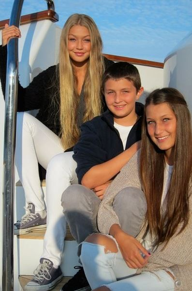
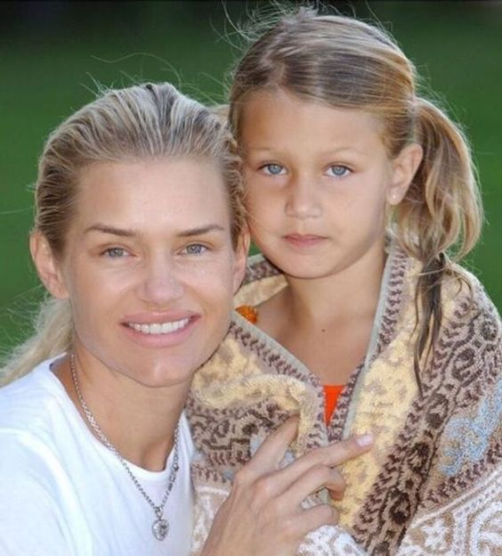
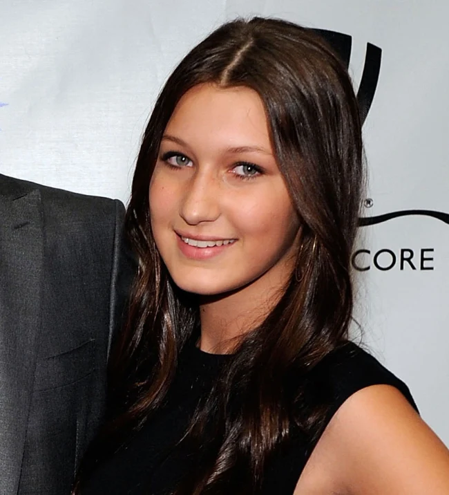
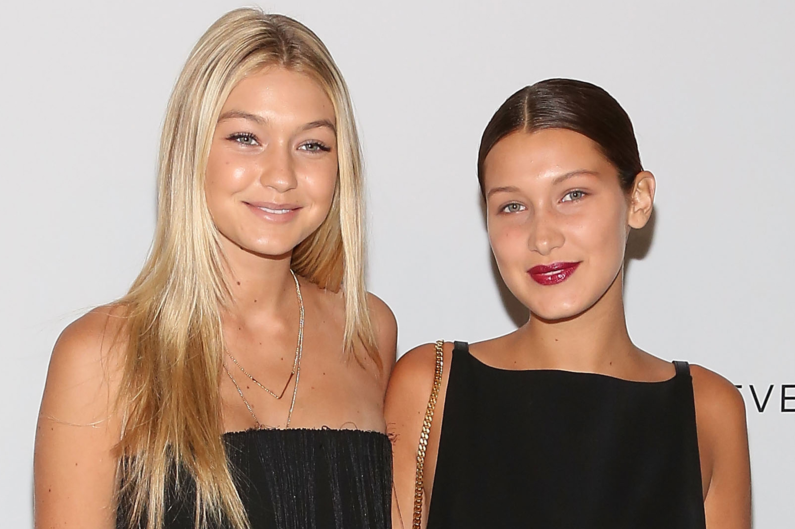

Infância
Nascida em Washington DC, Bella Hadid é filha de Mohamed Hadid, um promotor imobiliário palestino, e Yolanda Hadid, modelo, personalidade de reality show e designer de interiores holandesa. Mohamed Hadid também era esquiador e participou dos Jogos Olímpicos de Inverno de 1992 nas cores da Jordânia.
Ela tem uma irmã mais velha, Gigi Hadid (nascida em 23 de abril de 1995), e um irmão mais novo, Anwar Hadid (nascido em 22 de junho de 1999). Ela também tem duas meias-irmãs mais velhas, Marielle e Alana Hadid, do primeiro casamento de seu pai com Mary Butler.
Seus pais se divorciaram em 2000, quando ela tinha quatro anos. Em 11 de novembro de 2011, sua mãe se casou novamente com o produtor musical canadense David Foster. No entanto, em dezembro de 2015, foi anunciado que eles estão em processo de divórcio.
Ela também pratica passeios a cavalo[1] desde os três anos de idade, uma paixão que a mãe lhe transmitiu. Ela quase participou das Olimpíadas de 2016 no Rio, mas não pôde por causa da descoberta de sua doença de Lyme.
Bella estudou fotografia na prestigiada Parsons School for Design, em Nova York.


Adolescência
Desde os três anos que queria participar em provas equestres. A febre e sintomas associados impediram-na de montar a nível competitivo e, em 2014, Hadid mudou-se para Nova Iorque para estudar fotografia.
Rapidamente deu por si a servir de musa para profissionais — culpa dos 1,75 metros de altura, das curvas e dos olhos verdes –, mas acusaram-na de viver na sombra dos longos cabelos loiros da irmã. Mal sabiam que, quando era uma adolescente de 14 anos com um estilo punk, Bella pintou o cabelo de preto e azul para não a confundirem com Gigi. “Eu tenho uma personalidade mais sombria. Sendo a minha irmã loira e eu morena, é uma boa separação”, disse em entrevista à revista Allure. Uma atitude rebelde que lhe valeu uma noite na prisão depois de ser apanhada a conduzir sob o efeito de álcool, aos 17 anos. A partir daí, entregou-se de corpo e alma à profissão.


Fase Adulta (dias atuais)
Em 2014, Bella Hadid assinou um contrato com a agência de modelos IMG Models . Depois de aparecer na campanha publicitária de Balmain com sua irmã, Gigi Hadid, ela desfila por Tom Ford, Diane von Fürstenberg, Tommy Hilfiger e Jeremy Scott.
Em dezembro de 2014, Bella estava na capa da Jalouse Magazine e fez parte do Love Advent da Love Magazine.
Em setembro de 2015, ela desfilou para Marc Jacobs durante a New York Parade Week, Topshop, Burberry e Giles Deacon durante a Semana de Moda de Londres e Philipp Plein, Moschino, Missoni e Bottega Veneta durante a Semana da Moda de Milão. Ela posa na capa da revista Seventeen, bem como em editoriais da Vogue Australia e Elle. Ela também é eleita a "Melhor revelação do ano" pelo site Models.com.
Em dezembro de 2015, Bella Hadid desfilou pela primeira vez para a Chanel durante o desfile “Métiers d'Art” em Roma.
Em 2015, ela fez a capa de 11 revistas, incluindo V Magazine (com sua irmã Gigi), S Moda, Teen Vogue, Editorialista. Ela também aparece novamente no Love Advent da Love Magazine . Bella Hadid é o rosto da campanha Balmain no outono de 2015, ao lado de sua irmã Gigi Hadid, da marca Topshop, mas também da PINK, uma subsidiária da Victoria's Secret . Também aparece nas campanhas de Ralph Lauren, denominadas "Denim & Supply" e Look's da Samsung, cujos editoriais combinam tecnologia e moda.